library(skpr)
library(tidyverse)gen_design_basics
Load our libraries
Creating the candidate set and the constrained candidate set
We want to run a test on a synthetic aperture radar attached to an aircraft. We want to characterize how the resolution of the collected imagery changes depending on the speed, altitude, and mode of the radar.
We first want to generate our flight envelope. We do this by generating a table (data.frame) of all combinations of our input factors with expand.grid(), and then filtering out all those that don’t match our constraints.
#Small example of what expand.grid() outputs
expand.grid(altitude = seq(10000,30000,by=10000),
speed = seq(450,550,by=50),
mode = c("scan", "strip", "spotlight"),
target_env = c("urban", "desert")) altitude speed mode target_env
1 10000 450 scan urban
2 20000 450 scan urban
3 30000 450 scan urban
4 10000 500 scan urban
5 20000 500 scan urban
6 30000 500 scan urban
7 10000 550 scan urban
8 20000 550 scan urban
9 30000 550 scan urban
10 10000 450 strip urban
11 20000 450 strip urban
12 30000 450 strip urban
13 10000 500 strip urban
14 20000 500 strip urban
15 30000 500 strip urban
16 10000 550 strip urban
17 20000 550 strip urban
18 30000 550 strip urban
19 10000 450 spotlight urban
20 20000 450 spotlight urban
21 30000 450 spotlight urban
22 10000 500 spotlight urban
23 20000 500 spotlight urban
24 30000 500 spotlight urban
25 10000 550 spotlight urban
26 20000 550 spotlight urban
27 30000 550 spotlight urban
28 10000 450 scan desert
29 20000 450 scan desert
30 30000 450 scan desert
31 10000 500 scan desert
32 20000 500 scan desert
33 30000 500 scan desert
34 10000 550 scan desert
35 20000 550 scan desert
36 30000 550 scan desert
37 10000 450 strip desert
38 20000 450 strip desert
39 30000 450 strip desert
40 10000 500 strip desert
41 20000 500 strip desert
42 30000 500 strip desert
43 10000 550 strip desert
44 20000 550 strip desert
45 30000 550 strip desert
46 10000 450 spotlight desert
47 20000 450 spotlight desert
48 30000 450 spotlight desert
49 10000 500 spotlight desert
50 20000 500 spotlight desert
51 30000 500 spotlight desert
52 10000 550 spotlight desert
53 20000 550 spotlight desert
54 30000 550 spotlight desertcandidate_set = expand.grid(altitude = seq(10000,30000,by=1000),
speed = seq(450,550,by=5),
mode = c("scan", "strip", "spotlight"),
target_env = c("urban", "desert"))
nrow(candidate_set)[1] 2646Generating our first design with the unconstrained candidate set to see the classical design
First we’ll generate a design using the full linear model with all interactions. Our first test design will have 24 runs.
set.seed(2023)
flight_design_no_constraints = gen_design(candidateset = candidate_set,
model = ~(altitude + speed + mode)^2,
trials = 24,
randomized = FALSE)
flight_design_no_constraints altitude speed mode
1 10000 450 scan
2 10000 450 scan
3 10000 450 strip
4 10000 450 strip
5 10000 450 spotlight
6 10000 450 spotlight
7 10000 550 scan
8 10000 550 scan
9 10000 550 strip
10 10000 550 strip
11 10000 550 spotlight
12 10000 550 spotlight
13 30000 450 scan
14 30000 450 scan
15 30000 450 strip
16 30000 450 strip
17 30000 450 spotlight
18 30000 450 spotlight
19 30000 550 scan
20 30000 550 scan
21 30000 550 strip
22 30000 550 strip
23 30000 550 spotlight
24 30000 550 spotlightget_optimality(flight_design_no_constraints) D I A G T E Alias
1 100 0.212963 100 Not Computed 240 24 9ggplot(flight_design_no_constraints) +
geom_point(data=candidate_set, aes(x=speed,y=altitude),size=0.5) +
geom_count(aes(x=speed,y=altitude),color="red") +
facet_wrap(~mode) +
scale_radius(range = c(2,5), breaks = (function(x) seq(min(x),max(x),by=1)))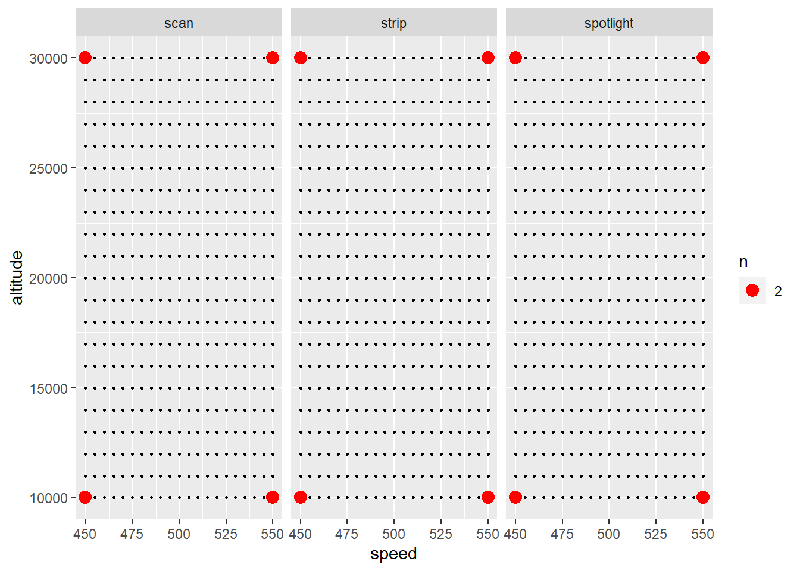
Note that randomization doesn’t affect the design–it simply rearranges it so it’s easier to read. The order of the design doesn’t affect the design metrics in any way. However, the tester should randomize the runs when the test is executed.
This generated the classical experimental design for this candidate set: test points at the corners of the space.
Design generation with a constrained candidate set
Now let’s see what design points are selected when we constrain our candidate set to the allowable flight envelope.
constrained_candidate_set = candidate_set |>
filter(70000 - speed * 90 > altitude) |>
filter(-430000 + speed * 1000 > altitude) |>
filter(150000 - speed * 300 < altitude) |>
filter(-14000 + speed * 50 < altitude)
#Plot the new constrained candidate set
ggplot(data=constrained_candidate_set) +
geom_point(aes(x=speed,y=altitude)) +
geom_abline(slope = -90, intercept=70000,color="red") +
geom_abline(slope = 1000, intercept=-430000,color="red") +
geom_abline(slope = -300, intercept=150000,color="red") +
geom_abline(slope = 50, intercept=-14000,color="red") +
labs(title = "Testing Flight Envelope") +
facet_wrap(~mode)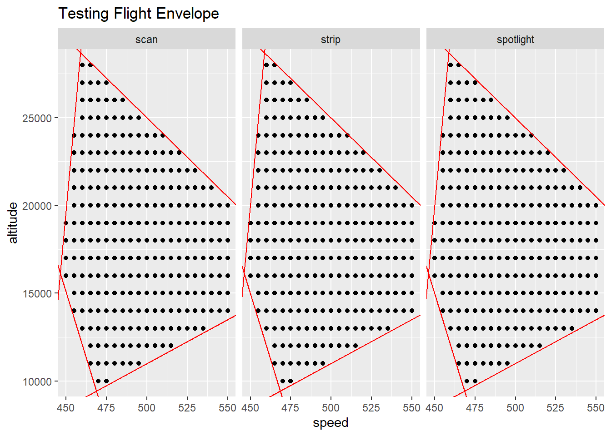
set.seed(2023)
flight_design = gen_design(candidateset = constrained_candidate_set,
model = ~ (altitude + speed + mode)^2,
trials = 24,
randomized=FALSE)
flight_design altitude speed mode
1 10000 470 scan
2 10000 470 scan
3 10000 470 strip
4 10000 470 strip
5 10000 470 spotlight
6 10000 470 spotlight
7 14000 550 scan
8 14000 550 scan
9 14000 550 strip
10 14000 550 strip
11 14000 550 spotlight
12 14000 550 spotlight
13 20000 550 scan
14 20000 550 scan
15 20000 550 strip
16 20000 550 strip
17 20000 550 spotlight
18 20000 550 spotlight
19 28000 460 scan
20 28000 460 scan
21 28000 460 strip
22 28000 460 strip
23 28000 460 spotlight
24 28000 460 spotlightget_optimality(flight_design) D I A G T E Alias
1 62.33936 0.3402056 44.99871 Not Computed 175.7037 2.453013 9ggplot(flight_design) +
geom_point(data=constrained_candidate_set, aes(x=speed,y=altitude),size=0.5) +
geom_count(aes(x=speed,y=altitude),color="red") +
facet_wrap(~mode) +
scale_radius(range = c(2,5), breaks = (function(x) seq(min(x),max(x),by=1)))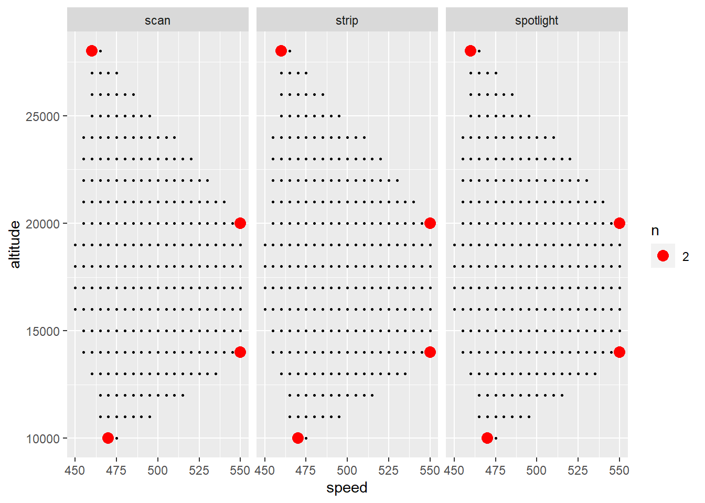
We see we are now selecting the “corners” of our flight envelope.
Generating designs that can detect curvature
Let’s say we suspect that the behavior of the NIIRS rating may not be linear–for example, we might suspect that at low altitudes we may have poor resolution due to shadowing effects, while at high altitudes the distance may negatively impact resolution, and we want to detect the sweet spot in-between. This means we want to be able to detect “curvature,” which we specify in an R formula with the “as.is” function, I(). This function evaluates the expression contained within rather than interpreting it as part of the formula. For example, the formula expression ~(x+y)^2 is interpreted by R as fitting a main effects model with interactions between x and y ~x + y + x:y, while ~I((x+y)^2) is interpreted as fitting a new column of value (x+y)^2. This function is just shorthand for adding a new column to your data.frame (e.g. design$x_squared = design$x * design$x) with the arithmetic value computed within.
set.seed(2023)
flight_design_quadratic = gen_design(candidateset = constrained_candidate_set,
model = ~ (altitude + speed + mode)^2 + I(speed^2) + I(altitude^2),
trials = 24)
get_optimality(flight_design_quadratic) D I A G T E Alias
1 42.11373 0.5627597 18.5322 Not Computed 187.1708 0.7093834 9ggplot(flight_design_quadratic) +
geom_point(data=constrained_candidate_set, aes(x=speed,y=altitude),size=0.5) +
geom_count(aes(x=speed,y=altitude),color="red") +
facet_wrap(~mode) +
scale_radius(range = c(2,5), breaks = (function(x) seq(min(x),max(x),by=1)))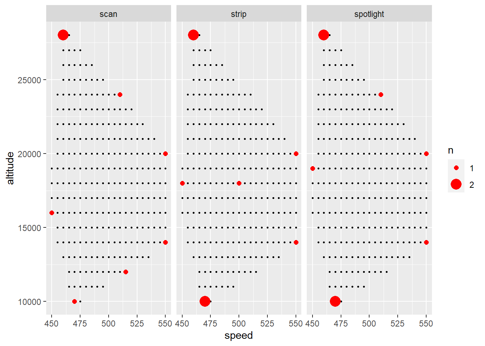
We see we now have center points long with points on the extrema: these points allow us to determine if the relationship is linear or has curvature.
Filling the design space
However, you might note that This appears to be only partially filling up the design space–one indication that your design could be improved is if there is a lack of balance. Let’s increase the number of runs and see where the additional test points end up.
set.seed(2023)
flight_design_quadratic2 = gen_design(candidateset = constrained_candidate_set,
model = ~ (altitude + speed + mode)^2 + I(speed^2) + I(altitude^2),
trials = 72)
ggplot(flight_design_quadratic2) +
geom_point(data=constrained_candidate_set, aes(x=speed,y=altitude),size=0.5) +
geom_count(aes(x=speed,y=altitude),color="red") +
facet_wrap(~mode) +
scale_radius(range = c(2,5), breaks = (function(x) seq(min(x),max(x),by=1)))
Now the three factors are fairly well balanced. When a design is well-balanced and adding more points results only in replicating additional test points, you can at least be assured that you are covering the space well (although those replicates might be required to have sufficient power to answer your hypothesis, depending on your effect size).
However, we should only expect balance between factors when the design space is balanced: disallowed combinations can actually make it so the optimal design also isn’t balanced. We can add a constraint to one of the modes to see how it results in the design losing symmetry across modes.
set.seed(2023)
constrained_candidate_set2 = filter(constrained_candidate_set, mode != "spotlight" | altitude < 25000)
flight_design_quadratic3 = gen_design(candidateset = constrained_candidate_set2,
model = ~ (altitude + speed + mode)^2 + I(speed^2) + I(altitude^2),
trials = 72)
ggplot(flight_design_quadratic3) +
geom_point(data=constrained_candidate_set2, aes(x=speed,y=altitude),size=0.5) +
geom_count(aes(x=speed,y=altitude),color="red") +
facet_wrap(~mode) +
scale_radius(range = c(2,5), breaks = (function(x) seq(min(x),max(x),by=1)))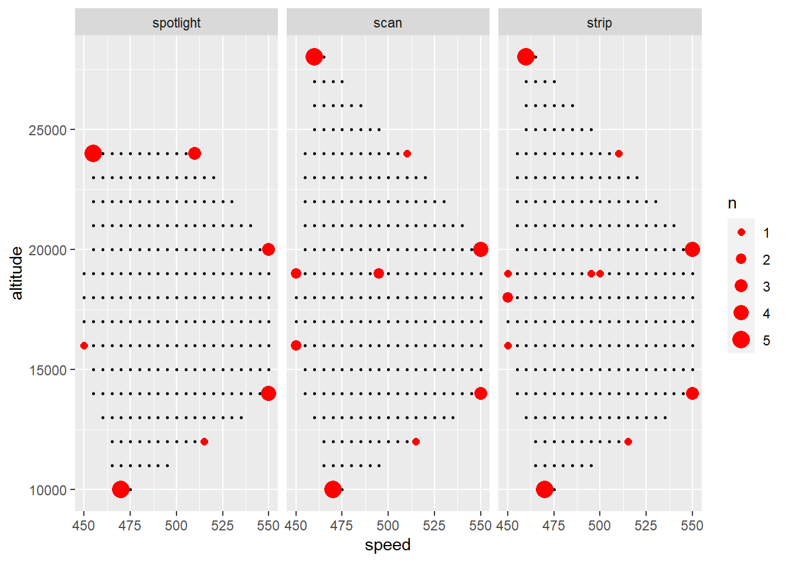
I-Optimality
Let’s say we’re more interested in predicting how the NIIRS value varies across the space, rather than just estimating the size of the effects from each model term. Here, we will want to use something called an I-optimal design, which minimizes the average prediction variance across the space.
set.seed(2023)
flight_design_prediction = gen_design(candidateset = constrained_candidate_set,
model = ~ (altitude + speed + mode)^2 + I(speed^2) + I(altitude^2),
trials = 72,
optimality = "I")
get_optimality(flight_design_prediction) D I A G T E Alias
1 39.75236 0.1515717 24.90418 Not Computed 476.1945 3.999816 9#Compare it to the previous design
get_optimality(flight_design_quadratic2) D I A G T E Alias
1 42.82161 0.1747125 20.54451 Not Computed 554.1562 2.570192 9#D-optimal design
ggplot(flight_design_quadratic2) +
geom_point(data=constrained_candidate_set, aes(x=speed,y=altitude),size=0.5) +
geom_count(aes(x=speed,y=altitude),color="red") +
facet_wrap(~mode) +
scale_radius(range = c(2,5), breaks = (function(x) seq(min(x),max(x),by=1)))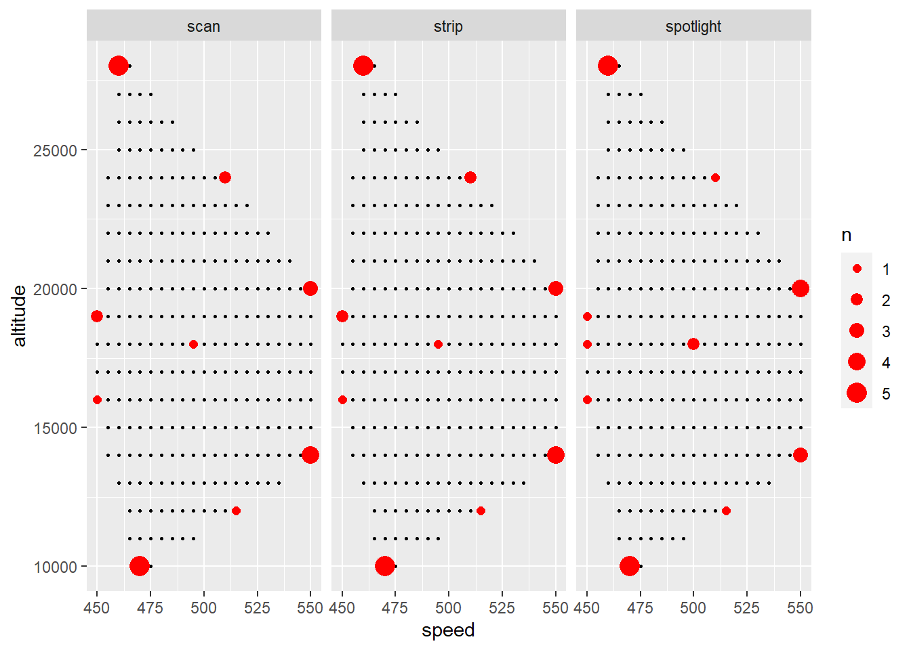
#I-optimal design
ggplot(flight_design_prediction) +
geom_point(data=constrained_candidate_set, aes(x=speed,y=altitude),size=0.5) +
geom_count(aes(x=speed,y=altitude),color="red") +
facet_wrap(~mode) +
scale_radius(range = c(2,5), breaks = (function(x) seq(min(x),max(x),by=1)))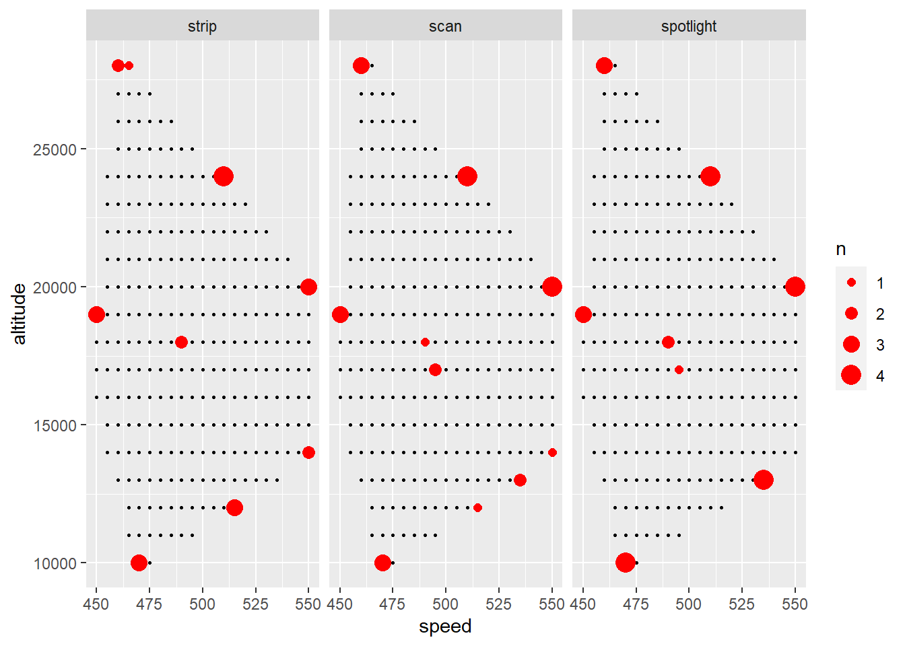
However, these optimality criteria don’t tell us much, other than we found a design that’s better in one criteria than the other. A design can be mathematically optimal for a given design criterion and specified number of runs but still be inadequate for the actual experimental goal(s). We need other ways to evaluate the designs to decide which one to choose.
Comparing D and I optimal designs with Fraction of Design Space plots
Ideally, a design would have low prediction variance across the entire design space. We can use a visualization called a Fraction of Design Space (FDS) plot to help choose between designs if this is the primary metric we are interested in. A FDS Plot shows the proportion of the design space over which the relative prediction variance lies below a given value. For a hypothetical ideal design, this graph would be a flat horizontal line: this means you would have the same prediction variance everywhere. Realistically, the prediction variance will always vary across the design space, as we only have a finite number of test points to allocate. When comparing designs using FDS plots we can assess designs by how much of the design space is under a particular prediction variance value as well as what the worst case scenario for prediction variance is. I-optimal designs are specifically designed for prediction, so let’s see how an I-optimal design compares to a D-optimal using an FDS plot.
plot_fds(flight_design_quadratic2, yaxis_max = 1, description = "Fraction of Design Space - D-optimal")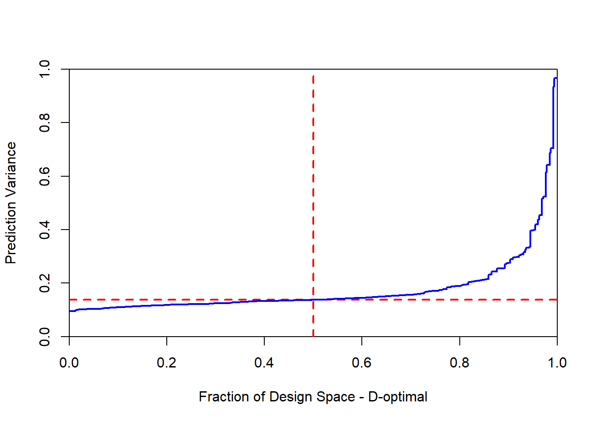
get_optimality(flight_design_quadratic2, "I") I
1 0.1747125plot_fds(flight_design_prediction, yaxis_max = 1, description = "Fraction of Design Space - I-optimal")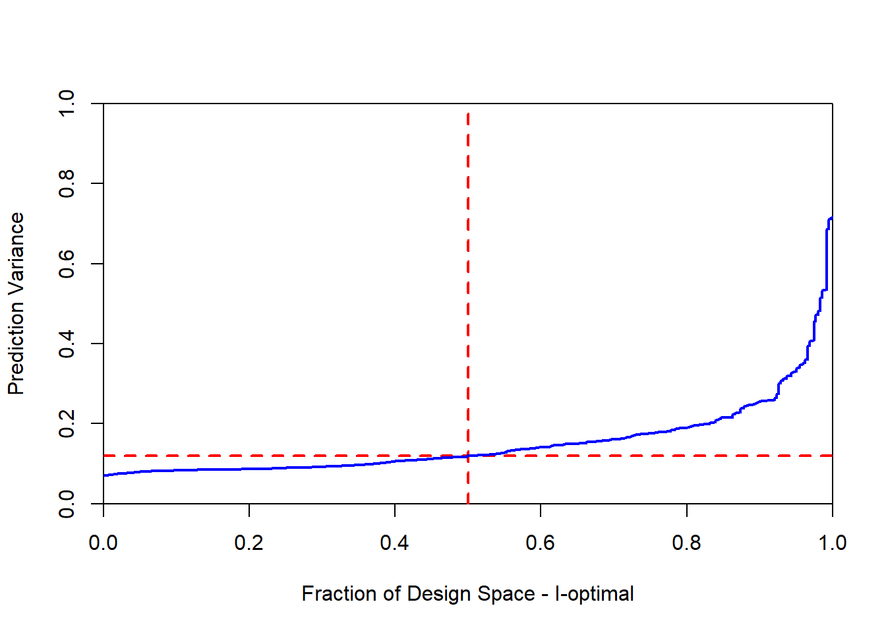
get_optimality(flight_design_prediction, "I") I
1 0.1515717We see that the I-optimal design has a lower overall average prediction variance across most of the space, but also has areas with much higher prediction variance. Depending on your experimental goals, you might value one property or the other.
Split-plot designs
See slides.
We also have included a hard-to-change factor Target Environment in our candidate set. We can construct a split-plot design in layers: first by building a design for the hard-to-change factors, fixing those blocks, and then building a design for just the easy-to-change factors.
set.seed(2023)
flight_design_htc = gen_design(candidateset = constrained_candidate_set,
model = ~ target_env,
trials = 8)
flight_design_htc target_env
1 urban
2 desert
3 urban
4 urban
5 desert
6 urban
7 desert
8 desertflight_design_splitplot = gen_design(candidateset = constrained_candidate_set,
model = ~ (altitude + speed + mode + target_env)^2 + I(speed^2) + I(altitude^2),
splitplotdesign = flight_design_htc,
trials = 64,
parallel = TRUE, add_blocking_columns = TRUE)
flight_design_splitplot Block1 target_env altitude speed mode
1.1 1 urban 28000 460 strip
1.2 1 urban 19000 500 scan
1.3 1 urban 10000 470 strip
1.4 1 urban 28000 460 spotlight
1.5 1 urban 20000 550 spotlight
1.6 1 urban 10000 470 spotlight
1.7 1 urban 14000 550 strip
1.8 1 urban 16000 450 scan
2.1 2 desert 14000 550 strip
2.2 2 desert 24000 510 scan
2.3 2 desert 28000 460 spotlight
2.4 2 desert 10000 470 spotlight
2.5 2 desert 19000 450 strip
2.6 2 desert 10000 470 scan
2.7 2 desert 28000 460 strip
2.8 2 desert 20000 550 spotlight
3.1 3 urban 10000 470 strip
3.2 3 urban 14000 550 spotlight
3.3 3 urban 20000 550 scan
3.4 3 urban 28000 460 spotlight
3.5 3 urban 24000 510 strip
3.6 3 urban 10000 470 scan
3.7 3 urban 19000 450 spotlight
3.8 3 urban 28000 460 scan
4.1 4 urban 19000 450 strip
4.2 4 urban 20000 550 scan
4.3 4 urban 10000 470 spotlight
4.4 4 urban 14000 550 spotlight
4.5 4 urban 14000 550 strip
4.6 4 urban 10000 470 scan
4.7 4 urban 28000 460 scan
4.8 4 urban 24000 510 spotlight
5.1 5 desert 14000 550 spotlight
5.2 5 desert 28000 460 spotlight
5.3 5 desert 10000 470 spotlight
5.4 5 desert 24000 510 strip
5.5 5 desert 20000 550 scan
5.6 5 desert 10000 470 strip
5.7 5 desert 18000 450 scan
5.8 5 desert 12000 515 strip
6.1 6 urban 28000 460 strip
6.2 6 urban 14000 550 scan
6.3 6 urban 28000 460 scan
6.4 6 urban 20000 550 strip
6.5 6 urban 20000 550 spotlight
6.6 6 urban 16000 450 spotlight
6.7 6 urban 10000 470 strip
6.8 6 urban 12000 515 scan
7.1 7 desert 28000 460 scan
7.2 7 desert 16000 450 strip
7.3 7 desert 20000 550 strip
7.4 7 desert 10000 470 scan
7.5 7 desert 28000 460 spotlight
7.6 7 desert 14000 550 scan
7.7 7 desert 19000 500 spotlight
7.8 7 desert 12000 515 spotlight
8.1 8 desert 16000 450 spotlight
8.2 8 desert 10000 470 strip
8.3 8 desert 20000 550 strip
8.4 8 desert 28000 460 scan
8.5 8 desert 14000 550 scan
8.6 8 desert 20000 550 spotlight
8.7 8 desert 28000 460 strip
8.8 8 desert 18000 495 scanggplot(flight_design_splitplot) +
geom_point(data=constrained_candidate_set, aes(x=speed,y=altitude),size=0.5) +
geom_count(aes(x=speed,y=altitude),color="red") +
facet_wrap(target_env~mode) +
scale_radius(range = c(2,5), breaks = (function(x) seq(min(x),max(x),by=1)))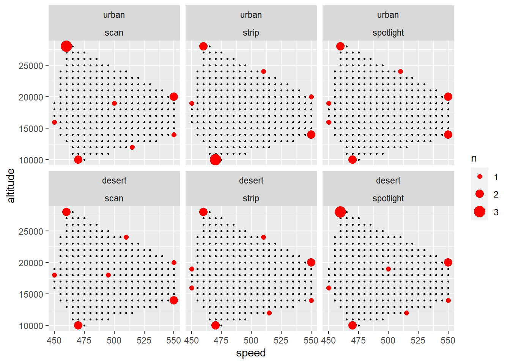
The blocking information is by default stored in the row names, but you can turn add_blocking_columns = TRUE and blocking columns will be added to the design. skpr knows to look for these and will handle them separately from factor terms.
You can repeat this process any number of times for nested split-plot designs where you have various blocking levels that have different levels (e.g. split-split plot, split-split-split plot, etc). We can also manually specify the split-plot sizes for each whole plot: if you have a test constraint where you know that some split plot levels are going to have more runs that others, you can account for that here.
flight_design_splitplot_unbalanced = gen_design(candidateset = constrained_candidate_set,
model = ~ (altitude + speed + mode + target_env)^2 + I(speed^2) + I(altitude^2),
splitplotdesign = flight_design_htc,
trials = 64, blocksizes = c(4,4,12,12,4,4,12,12),
parallel = TRUE, add_blocking_columns = TRUE)
flight_design_splitplot_unbalanced Block1 target_env altitude speed mode
1.1 1 urban 18000 495 scan
1.2 1 urban 28000 460 strip
1.3 1 urban 14000 550 strip
1.4 1 urban 10000 470 spotlight
2.1 2 desert 20000 550 strip
2.2 2 desert 12000 515 spotlight
2.3 2 desert 16000 450 scan
2.4 2 desert 28000 460 spotlight
3.1 3 urban 28000 460 scan
3.2 3 urban 19000 495 strip
3.3 3 urban 14000 550 spotlight
3.4 3 urban 10000 470 strip
3.5 3 urban 28000 460 spotlight
3.6 3 urban 20000 550 strip
3.7 3 urban 16000 450 scan
3.8 3 urban 14000 550 scan
3.9 3 urban 28000 460 strip
3.10 3 urban 20000 550 scan
3.11 3 urban 10000 470 spotlight
3.12 3 urban 24000 510 spotlight
4.1 4 urban 10000 470 scan
4.2 4 urban 14000 550 spotlight
4.3 4 urban 28000 460 scan
4.4 4 urban 20000 550 strip
4.5 4 urban 28000 460 spotlight
4.6 4 urban 10000 470 scan
4.7 4 urban 16000 450 strip
4.8 4 urban 10000 470 strip
4.9 4 urban 19000 500 spotlight
4.10 4 urban 28000 460 strip
4.11 4 urban 18000 450 spotlight
4.12 4 urban 20000 550 scan
5.1 5 desert 28000 460 scan
5.2 5 desert 24000 510 strip
5.3 5 desert 16000 450 strip
5.4 5 desert 14000 550 scan
6.1 6 urban 28000 460 scan
6.2 6 urban 20000 550 spotlight
6.3 6 urban 16000 450 spotlight
6.4 6 urban 12000 515 strip
7.1 7 desert 19000 450 strip
7.2 7 desert 28000 460 spotlight
7.3 7 desert 20000 550 spotlight
7.4 7 desert 28000 460 strip
7.5 7 desert 19000 450 scan
7.6 7 desert 10000 470 strip
7.7 7 desert 10000 470 spotlight
7.8 7 desert 20000 550 scan
7.9 7 desert 14000 550 strip
7.10 7 desert 24000 510 scan
7.11 7 desert 12000 515 spotlight
7.12 7 desert 10000 470 scan
8.1 8 desert 28000 460 strip
8.2 8 desert 28000 460 scan
8.3 8 desert 10000 470 strip
8.4 8 desert 18000 450 spotlight
8.5 8 desert 14000 550 scan
8.6 8 desert 20000 550 spotlight
8.7 8 desert 14000 550 strip
8.8 8 desert 10000 470 scan
8.9 8 desert 24000 510 scan
8.10 8 desert 20000 550 spotlight
8.11 8 desert 10000 470 spotlight
8.12 8 desert 28000 460 spotlightDesign augmentation
In addition to split-plot designs, there are other occasions you might run into blocked designs. One of these occasions is when you’re using an iterative testing strategy referred to as sequential experimental design, which is an useful tool when designing resource-constrained experiments.
Sequential design refers to running a much smaller (and thus, less resource- intensive) screening design to test for the existence of effects before committing to a more expensive experiment to characterize their size. After running a screening experiment and detecting that some effects are active, a practitioner needs to design a follow-up experiment to actually characterize the active effects. Generating an entire new optimal design ignores the information already collected in the prior experiment, potentially wasting testing resources that can be targeted at characterizing the effects of interest.
skpr’s Alias-optimality criteria can generate optimal screening designs. Let’s see how it does.
set.seed(2023)
flight_design_screening = gen_design(candidateset = constrained_candidate_set,
model = ~ altitude + speed + mode,
trials = 12, optimality = "alias", minDopt = 0, repeats = 100,
parallel = TRUE)
set.seed(2023)
flight_design_d = gen_design(candidateset = constrained_candidate_set,
model = ~ altitude + speed + mode,
trials = 12, optimality = "D", repeats=100)
ggplot(flight_design_screening) +
geom_point(data=constrained_candidate_set, aes(x=speed,y=altitude),size=0.5) +
geom_count(aes(x=speed,y=altitude),color="red") +
facet_wrap(~mode) +
scale_radius(range = c(2,5), breaks = (function(x) seq(min(x),max(x),by=1)))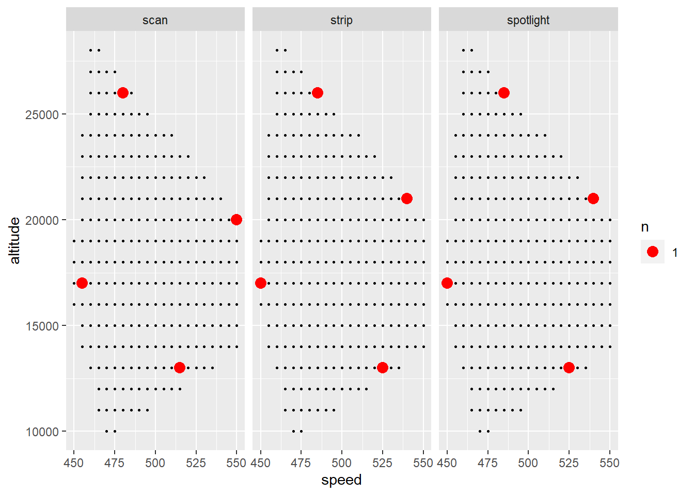
ggplot(flight_design_d) +
geom_point(data=constrained_candidate_set, aes(x=speed,y=altitude),size=0.5) +
geom_count(aes(x=speed,y=altitude),color="red") +
facet_wrap(~mode) +
scale_radius(range = c(2,5), breaks = (function(x) seq(min(x),max(x),by=1)))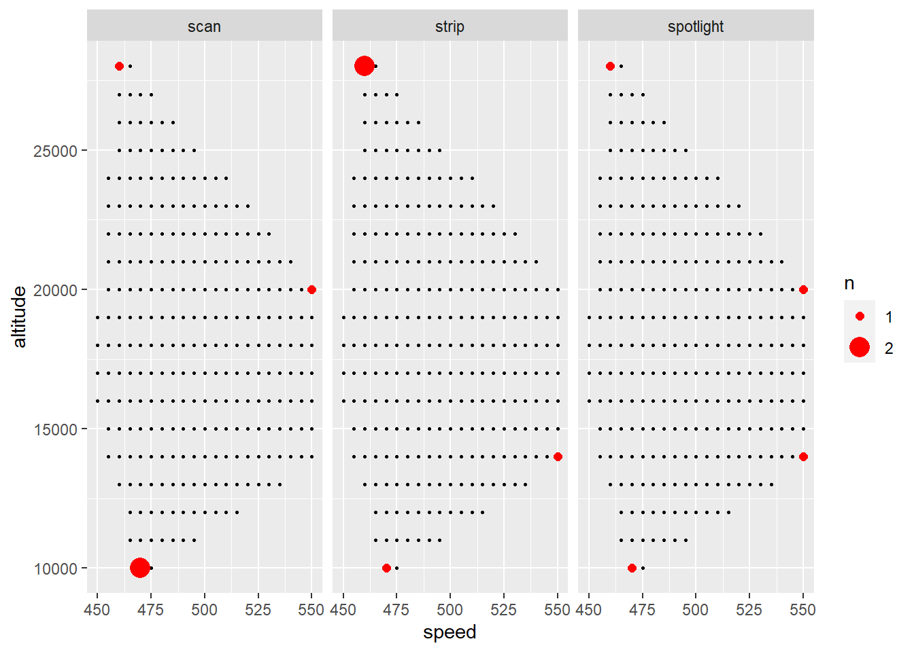
#Comparing optimality values
get_optimality(flight_design_d) D I A G T E Alias
1 83.36936 0.3515361 78.41141 Not Computed 52.64198 5.532092 4.767266get_optimality(flight_design_screening) D I A G T E Alias
1 67.50859 0.4056887 58.13202 Not Computed 45.42741 3.294533 4.008502#Comparing correlation structure
plot_correlations(flight_design_d)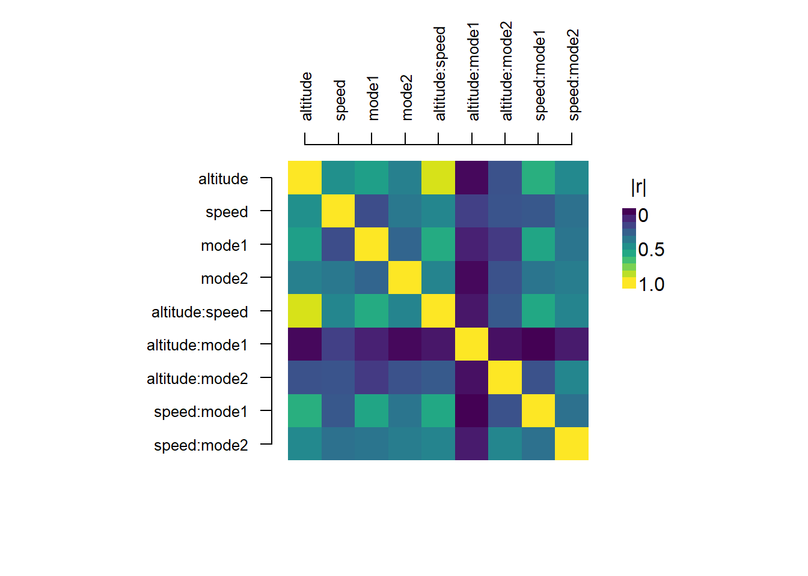
plot_correlations(flight_design_screening)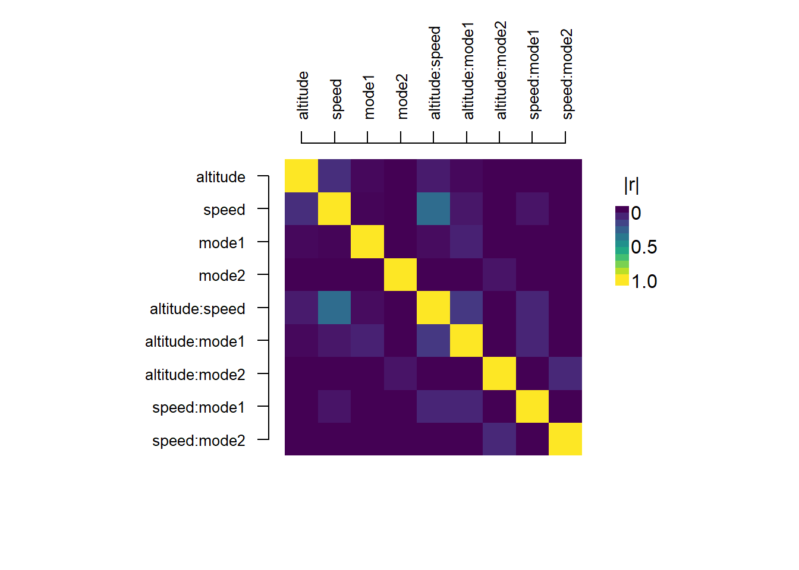
Now that we have our screening design–let’s augment it. Let’s say we ran our experiment and found that speed:mode and altitude:speed aren’t significant. We can then remove that term from the design and generate a new design that only consists of the terms we have found to be active.
gen_design(constrained_candidate_set,
model = ~altitude + speed + mode + altitude:mode,
augmentdesign = flight_design_screening,
trials = 24) ->
augmented_designWarning in model.matrix.default(model, augmentnormalized, contrasts.arg =
contrastslist): variable 'target_env' is absent, its contrast will be ignoredaugmented_design Block1 altitude speed mode
1 1 17000 455 scan
2 1 13000 515 scan
3 1 13000 525 spotlight
4 1 13000 525 strip
5 1 21000 540 strip
6 1 26000 485 strip
7 1 17000 450 spotlight
8 1 26000 485 spotlight
9 1 17000 450 strip
10 1 20000 550 scan
11 1 21000 540 spotlight
12 1 26000 480 scan
13 2 28000 460 scan
14 2 10000 470 spotlight
15 2 10000 470 strip
16 2 10000 470 scan
17 2 28000 460 strip
18 2 28000 460 spotlight
19 2 10000 470 scan
20 2 28000 460 scan
21 2 28000 460 spotlight
22 2 10000 470 spotlight
23 2 10000 470 strip
24 2 28000 460 strip#Dark green dots are the new points
ggplot() +
geom_point(data=constrained_candidate_set, aes(x=speed,y=altitude),size=0.5) +
geom_count(data=augmented_design, aes(x=speed,y=altitude),color="darkgreen") +
geom_count(data=flight_design_screening, aes(x=speed,y=altitude),color="red") +
facet_wrap(~mode) +
scale_radius(range = c(2,5), breaks = (function(x) seq(min(x),max(x),by=1)))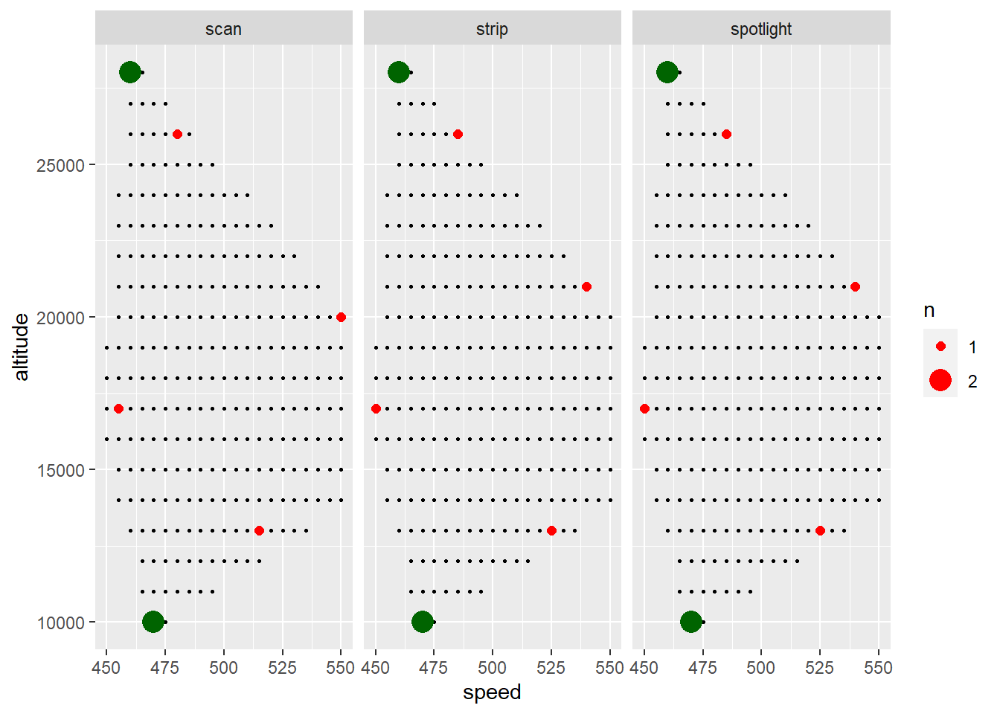
Statistical Power
One of the most common goals in running an experiment is to study how a response variable is affected by changes in the experimental factors, and whether those changes are statistically significant. This means the primary concern of the experimenter is to make sure their experiment can actually detect these effects if they exist. We judge this primarily based on statistical power: the probability that our experiment will be able to detect an effect if one truly exists. We’ll look into how to calculate that in skpr next.
But first, let’s regenerate and save our D-optimal design to a CSV file. Although we can easy regenerate our design later by setting our random seed and calling gen_design() again, it can also be nice to save it to a file so you can easily share it and load it later.